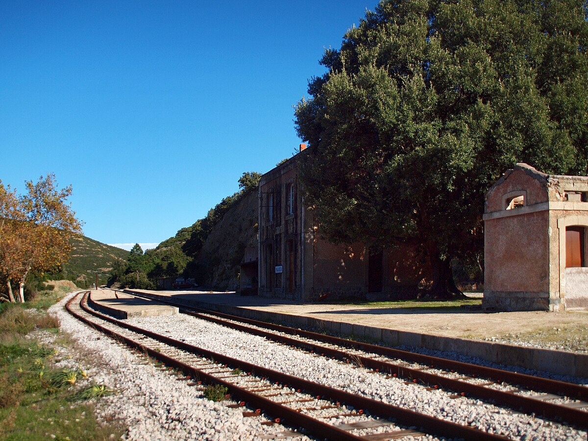
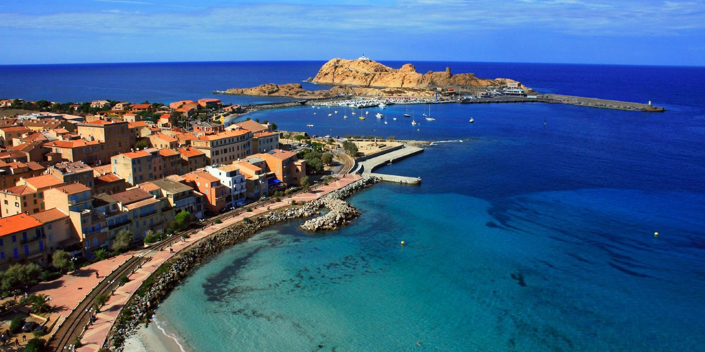
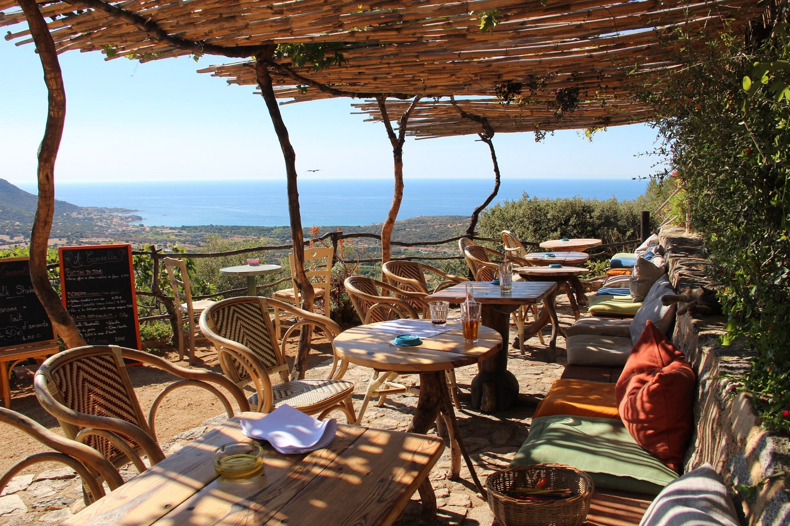
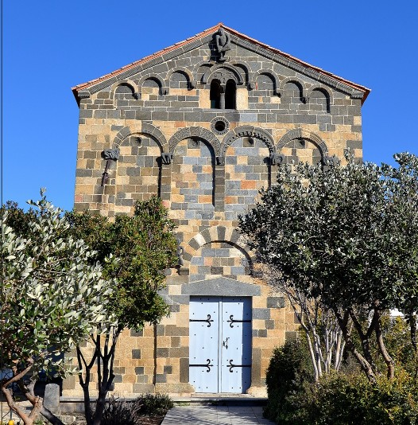
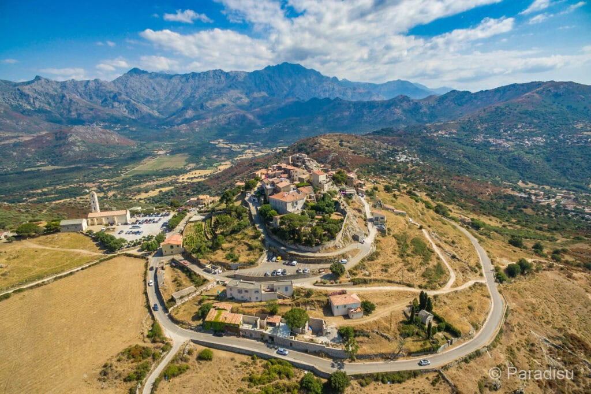
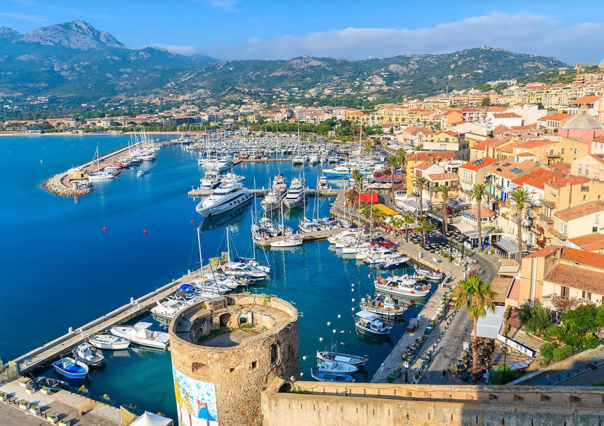
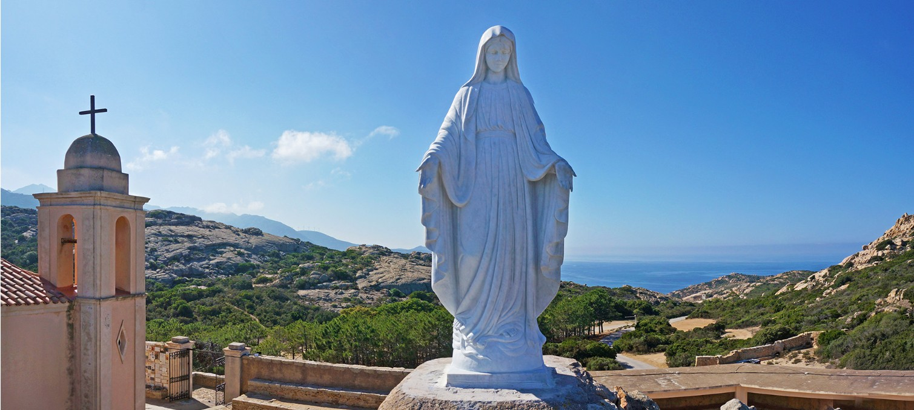
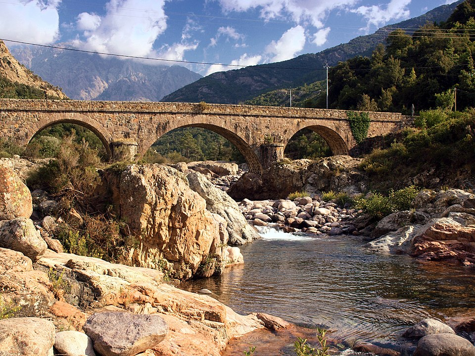
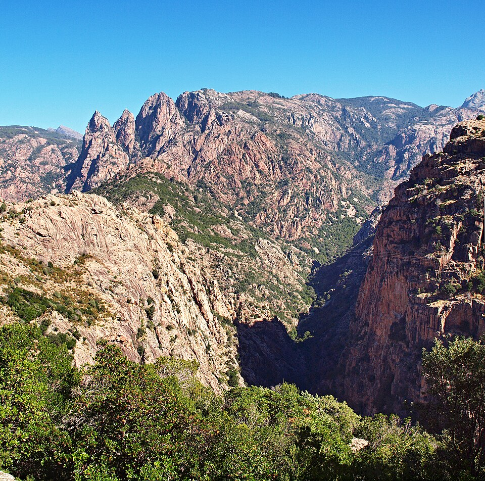

DAY03 – Palasca, Île-Rousse, Nonza, Aregno, Sant’Antonino, Calvi, Fango, Porto, Spelunca, Christ Roi
A mérés automatikusan indul oldalnyitáskor, majd 5 mp múlva frissít.
A távolságok minden célpontnál frissülnek, és az oldal a legvalószínűbb következő pontra ugrik.
1. Gare de Palasca
42.593340, 9.048421
mérés: várakozás
távolság: —
„Korzikai akta” autós üldözés és lövöldözés helyszíneként van megadva.
A megálló lényege kifejezetten filmes kötődés, nem hosszú program.
Gyors fotópontnak működik, ha ugyanazt a környezetet szeretnéd látni élőben.

2. L’Île-Rousse
42.635741, 8.938554
mérés: várakozás
távolság: —
Alternatív forgatási helyszínként szerepel Ajaccio helyett.
Itt a megálló fókusza a városi-tengerparti hangulat és a filmes asszociáció.
Rövid sétával is gyorsan „megvan a kép”, nem igényel hosszú időt.

3. A Casarella – kilátásos falusi étterem (Nonza)
42.599313, 8.902105
mérés: várakozás
távolság: —
A leírás szerint a sziklafal peremén működő, kisméretű étterem.
Hagyományos charcuterie tálakat és korzikai borokat említ, vagyis kifejezetten helyi ízekre van hangolva.
A „kilátásos” jelleg miatt ez egyszerre pihenő és panorámapont.

4. Église de la Trinité, Aregno
42.582330, 8.897603
mérés: várakozás
távolság: —
A 11. századi román templom a háromszínű kövekkel díszített homlokzatáról szerepel.
A faragott állatalakok és motívumok a leírás szerint ősi védelmező szimbólumokat hordoznak.
Rövid megállóval is erős „kőből olvasható” középkori hangulatot ad.

5. Sant’Antonino – hegytetői erődített falu
42.588970, 8.905409
mérés: várakozás
távolság: —
A leírás szerint a sziget egyik legrégebbi települése, a 9. századtól lakott.
Stratégiai fekvése miatt évszázadokon át védelmi pontként említik.
A panorámát kiemelkedőnek adtad meg, ezért ez tipikusan „fent megállunk és körbenézünk” pont.

6. Calvi citadella
42.568253, 8.760439
mérés: várakozás
távolság: —
A nyugati part egyik legjelentősebb erődje, a leírás szerint Genova katonai támaszpontja volt a Földközi-tengeren.
A falak mögött 15–17. századi erődítési megoldások nyomai említhetők.
Helyi hagyományként az is szerepel, hogy Kolumbusz Calviban született, és erről emléktábla van a citadella falán.

7. Notre-Dame de la Serra – Calvi szenthelye
42.552313, 8.736730
mérés: várakozás
távolság: —
A hegytetőn álló kápolna Calvi ősi védőszentjéhez kötődik a leírásod szerint.
Hagyományként azt adtad meg, hogy aki itt együtt imádkozik a párjával, annak a szerelme örök marad.
A panorámát Korzika egyik legszebb körkilátásaként említed, ezért ez tipikusan must-stop kilátópont.

8. Fango-völgy
42.423234, 8.723949
mérés: várakozás
távolság: —
A leírás szerint a Fango folyó vörös kövei és természetes medencéi UNESCO-bioszféra területhez kapcsolódnak.
A D81 út feletti völgynézetet különösen látványosnak adtad meg.
Ez ezért tipikusan „útközbeni tájablak” pont, ahol a völgy formája és színei adják a lényeget.

9. Porto-öböl – UNESCO világörökség
42.266531, 8.705166
mérés: várakozás
távolság: —
A leírás szerint a Scandola rezervátum hatására védett, természetes öböl.
A narancsvörös sziklák és a mély öböl együtt adja azt a különleges tengerparti látványt, amit megjelöltél.
Rövid megállóval is erős, mert itt maga a partforma a „fő attrakció”.

10. Gorges de la Spelunca – szurdok
42.251334, 8.761211
mérés: várakozás
távolság: —
A Porta és Évisa közötti vörös sziklafalak alkotta szorosként adtad meg.
A leírásod szerint gyaloghidak és mély kanyon adja a hely karakterét.
A különleges fényviszonyok miatt ez jó „szurdok-fotó” pont, akár rövidebb megállóval is.

11. Statue du Christ Roi
42.290453, 8.878330
mérés: várakozás
távolság: —
A szobor 1984-ben készült, a korzikai művész Noël Bonardi alkotása.
A megnevezés „Christ the King”, korzikaiul „U Cristu Rè” formában is szerepel.
A leírásod alapján panorámát ad a környező hegyvidéki táj felé.
Térkép